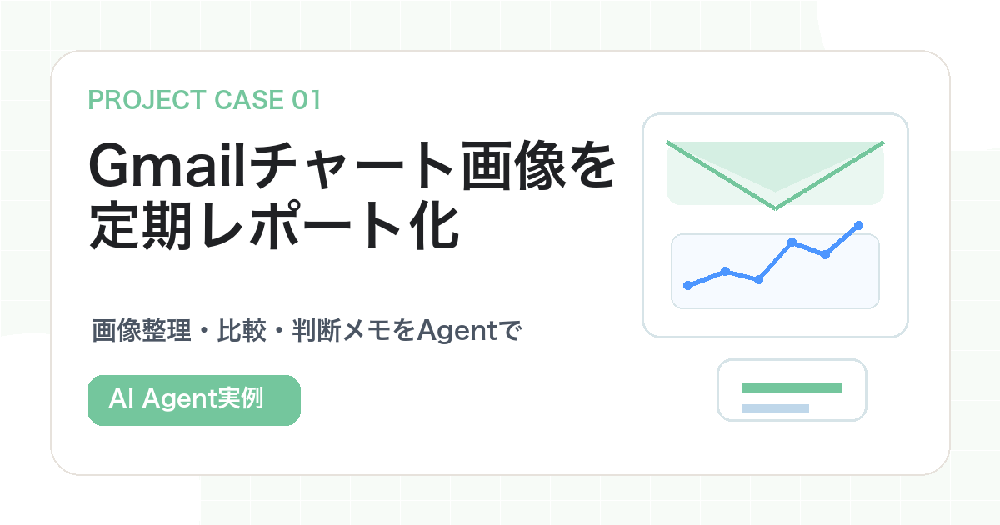

Case Study / Gmail × AI Agent
Gmailに届くチャート画像を、
AI Agentで定期レポート化した事例
大量のチャート画像を探し、組み合わせ、比較してメモを書く。毎日続けると重くなる作業を、Agentで「人が判断できる状態」まで整理した事例です。

この記事の立ち位置
この記事は投資助言、売買推奨、収益保証ではありません。AI Agentで投資判断を自動化するのではなく、調査材料を整理し、人間が確認しやすいレポートにする事例です。
毎回チャートを見る作業は、思ったより消耗する
チャート画像を見て判断する作業は、一見すると「見るだけ」に見えます。しかし、実際にはかなり細かい作業が重なっています。
- Gmailから対象メールを探す
- 添付画像を開く
- 銘柄ごとに短期画像と長期画像をそろえる
- Zone、Line、支持抵抗、ローソク足の流れを見る
- 銘柄ごとのメモを書く
- 買い優勢、売り優勢、待機を整理する
- 判断前の注意点を書く
1回だけならできます。ただ、これを毎日、朝・昼・夜のように繰り返すと、作業そのものが判断力を削っていきます。
Agentに任せるのは「売買判断」ではなく、「判断できる状態まで整理すること」です。
今回Agentに任せたこと
この自動化では、Gmailにあるチャート画像を材料にしました。実際の流れは次の通りです。
- Gmailの送信済みメールから、対象のチャートバンドルを探す
- 各通貨ペアのw200画像とw800画像をそろえる
- 画像内のZone、Line、支持抵抗、直近の流れだけを見る
- 銘柄ごとに上昇、下落、横ばい・待機のシナリオを整理する
- 日本語のMarkdownレポートにまとめる
- 取引実行はしない
実例では、20銘柄×w200・w800の40画像を対象にしました。さらに09時、15時、21時のように、同じ形式でレポートを作るための自動化メモも残しています。
レポート形式を固定すると、毎回、銘柄名、構造認識、主要Zone・Line、上昇・下落・待機の比重、方針、注意点が同じ形で出るため、前回との比較がしやすくなります。
Agentへの依頼は、判断より作業に寄せる
このタイプの自動化で「儲かる銘柄を教えて」と頼むのは危険です。代わりに、画像の分類、比較、観察メモ作成を依頼します。
Gmailの最新チャート画像セットから、各銘柄のw200画像とw800画像をペアにしてください。
各銘柄について、画像内で確認できる範囲だけを使い、次を整理してください。
1. 直近の構造認識
2. 主要なZone、Line、支持抵抗
3. 上昇、下落、横ばい・待機の主観比重
4. 買い条件、売り条件、待機条件
5. 判断前に人間が確認すべきこと
ライブ価格、ニュース、外部情報、取引APIは使わないでください。
売買は実行せず、判断材料のレポートだけを作ってください。ポイントは、判断材料と実行を分けることです。Agentは疲れずに同じ型で観察を続けられます。一方、お金が動く判断や最新状況の確認は、人が見るべき場所です。
人間が確認する場所
- 添付画像が正しいセットか
- 銘柄ペアが崩れていないか
- 画像の読み取りに無理がないか
- 最新価格やニュースと矛盾していないか
- レポートが投資助言のように断定しすぎていないか
- 実際の判断前に、最新チャートを見直したか
レポート作成、分類、比較、要約まではAgentが得意です。しかし、最終判断は必ず人が持つ。この線引きが、金融系自動化では重要です。
金融以外の画像レポートにも応用できる
この流れは、Gmail以外にもDrive、Slack、Notion、Discordなどに届く画像レポートへ応用できます。
最初から定期実行にする必要はありません。まずは1回分の画像セットをフォルダに入れ、次のように依頼してみてください。
このフォルダにある画像を、ファイル名ごとに分類して、同じ対象の画像をペアにしてください。
そのうえで、画像から読み取れることだけを使って、比較しやすい表にまとめてください。
最後に、人間が確認すべき点も書いてください。これだけでも、「毎回見るだけで疲れる作業」を軽くできます。
Next Article
次は、大量ログから仮説を作る事例へ。
約776万行の取引ログを、ウォレット、銘柄、時間軸ごとに整理した事例も公開しています。